Ryan Phillips
ABOUT
Hi there! I'm a developer/software-engineer with a Computer Science degree from Oregon State University. I'm located in Oregon (NW USA) and spend most of my time writing code and designing games. I have a varied background which covers databases, AI, web, mobile, visual design, audio design, and music composition. I'm always interested to hear about innovative/creative ideas, and am currently open to taking on a couple of new projects (either solo or as part of a team) - so hit me up if you have a proposition. Thanks!
PAST PROJECTS
iOS Games
| 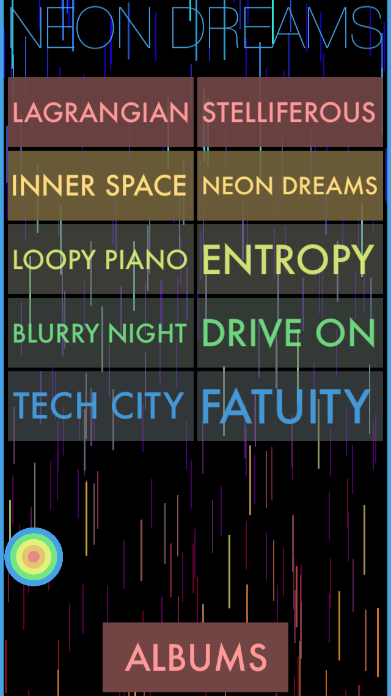 | 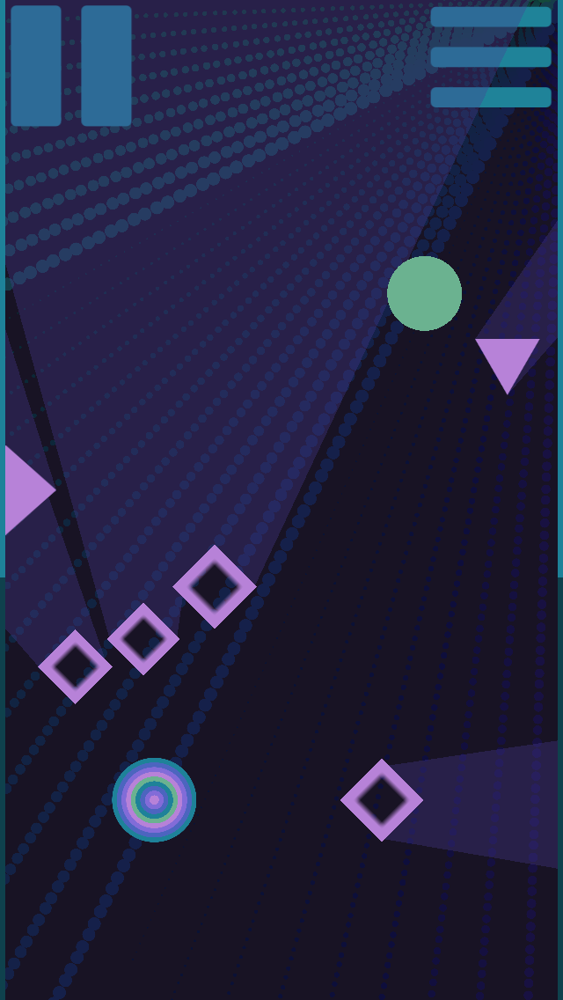 |
Music DodgerAn iOS game built with Swift and SpriteKit. Also uses Python for build scripts and node.js & JavaScript for JSON generation. |
| 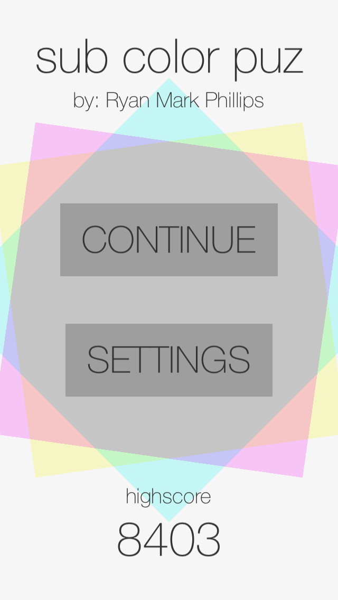 | 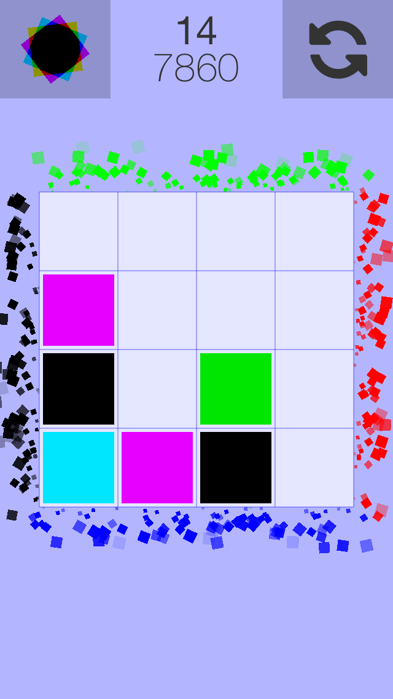 |
Sub Color PuzA basic puzzle game built with Swift and SpriteKit. |
Shark Eyes (now called Seacast)
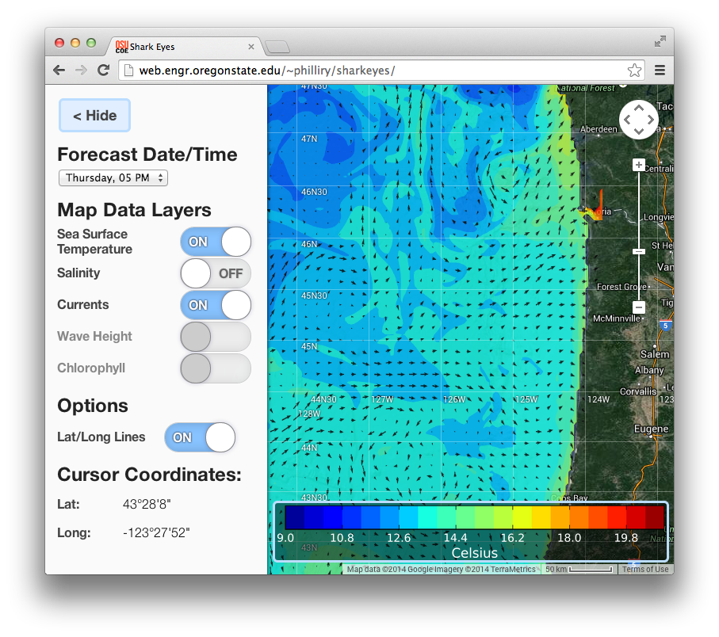Shark Eyes was an undergraduate senior design project and a collaboration with the College of Earth, Ocean, and Atmospheric Sciences. The goal of the project was to make Oregon Coast research data available to fishermen via a simple and easy to use web application.
This application was built on a whole stack of technologies including Django, Matplotlib, and the Google Maps API. My work on it involved designing and coding the UI (html, css, js, etc.) along with coding the first version of the data to image tiles generator in Python.
Interactive Course Material Prototypes
| 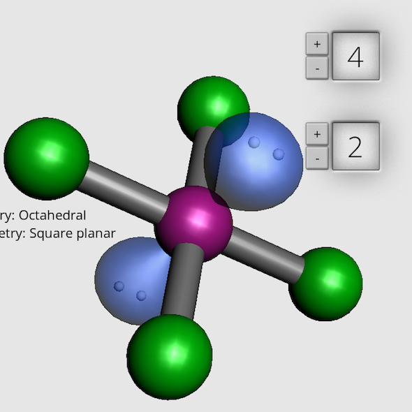 | 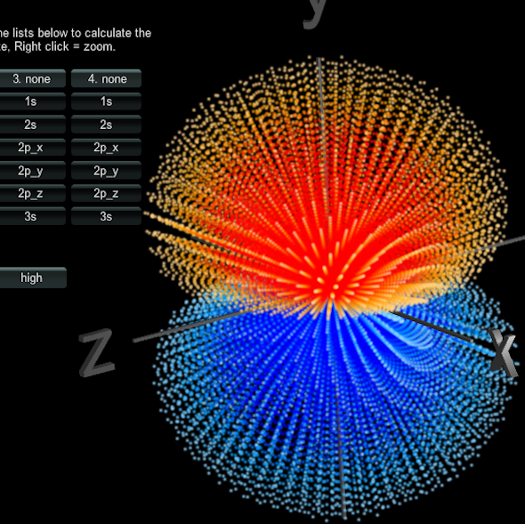 |
| 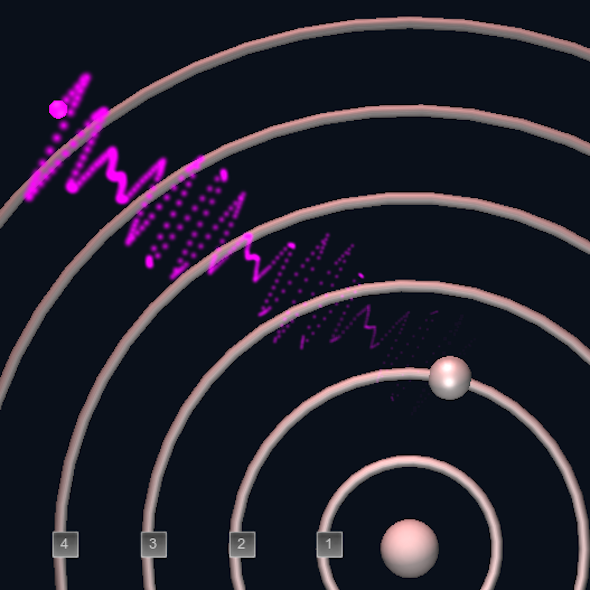 | 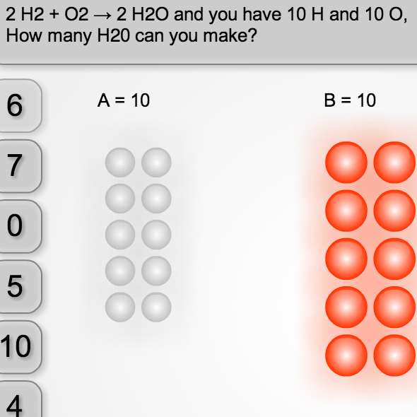 |
Video Processing Script
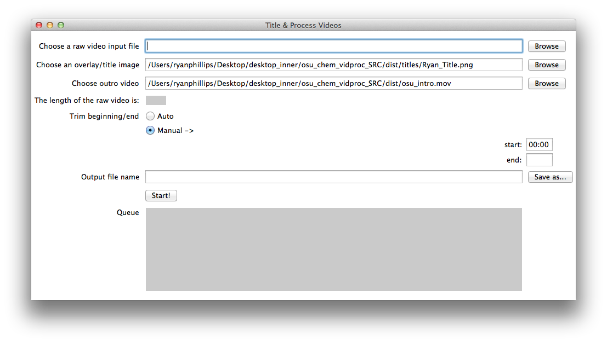I wrote some Python scripts using the audio/video processing libraries SOX and FFMPEG to auto detect start/finish and auto crop clips, add titles, compress and normalize audio, and transcode for the web.
I also created a basic GUI application (so that others could achieve a similar workflow after I left) with Tkinter and PyInstaller which provided most of the same functionality, but in a simple, easy-to-use, cross-platformer package.
Websites
| 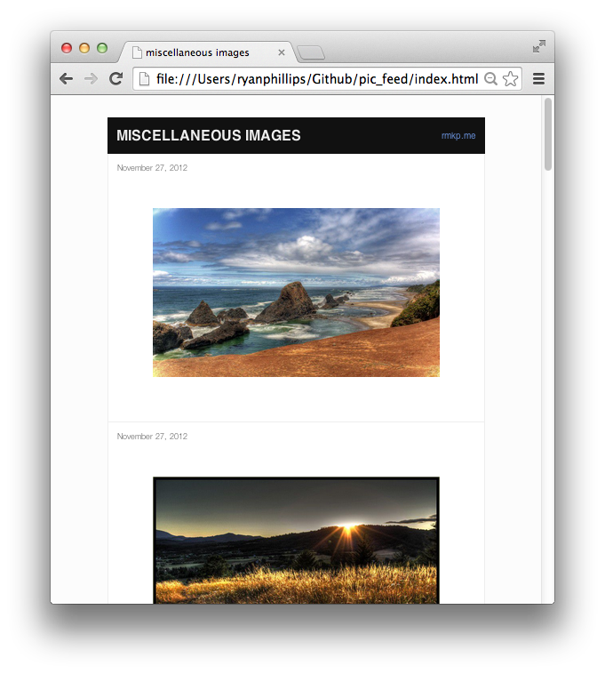 |
Picture FeedStatic site generator: turns a folder of images into a series of pages. This was basically just an exercise in piecing together a number of different technologies including watchdog, jinja2, and scss. |
| 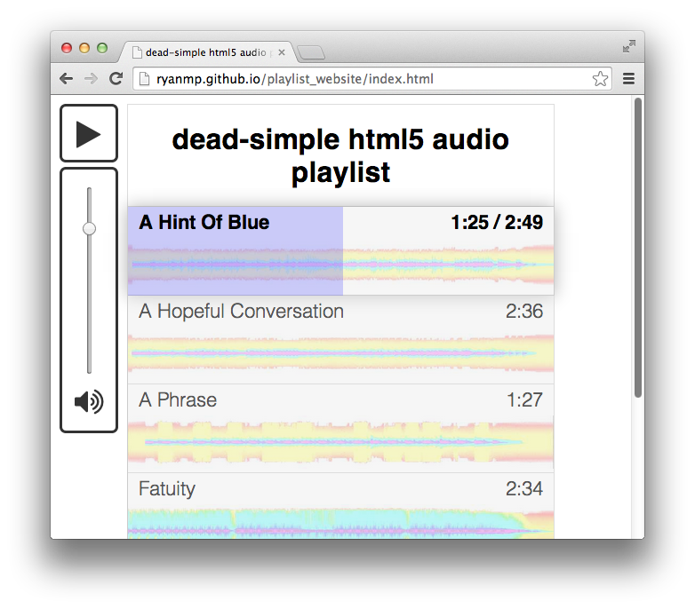 |
Playlist GeneratorThis is a static generator that turns a folder of songs into a website which relies on jQuery for the UI. Each song gets a waveform representation, inspired by the SoundCloud music player. |